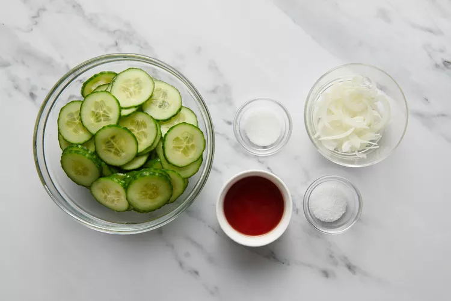

Cucumber Salad

This is an image of a cucumber salad.
This could be what you make! With some hard work, following this list, and determination, you'll be there!
I'm designing the website like I'm asking you to make the recipe -- with determination and grit!
Ingredients
- Cucumber
- Red Onion
- Dill
- Extra Firm Tofu
- Lemongrass
Steps
- Gather ingredients
- Slice ingredients
- Toss ingredients
- Apply dressing (if desired)